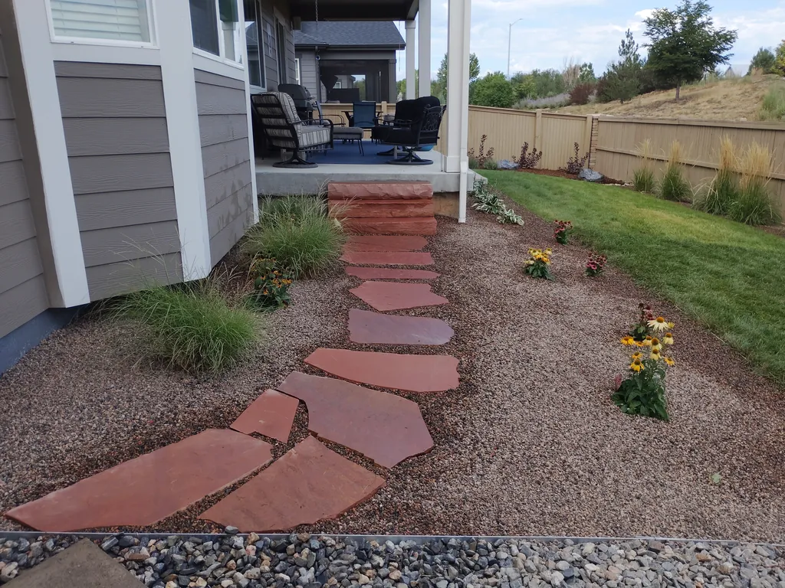

Hardscaping
Patios, retaining walls, fire pits, and outdoor living spaces built for Colorado’s freeze-thaw cycles. Engineered for durability and designed for your lifestyle.
Explore hardscaping →Everything below is handled by the same accountable crew — from the structure underfoot to the landscape around it. Pick a service to see how we work it, or tell us what you're changing and we'll point you to the right one.

Each service below has its own page with scope, process, and finished projects.
Patios, retaining walls, fire pits, and outdoor living spaces built for Colorado’s freeze-thaw cycles. Engineered for durability and designed for your lifestyle.
Explore hardscaping →Premium cedar, split-rail, and ornamental steel fences installed straight and finished to last. Custom gates and hardware included.
Explore fencing →Customized mowing, aeration, and overseeding programs tailored to Longmont’s climate. Includes seasonal cleanup and soil health treatments.
Explore lawn care →Downspouts tied into buried lines, rock channels, and grading that send roof water away from the house. Prevents erosion and foundation damage.
Explore drainage →Gravel landscapes, natural stone, and drought-resistant planting zones that cut water use by up to 60%—without sacrificing beauty.
Explore xeriscaping →Leaves off lawn and beds, final mow, core aeration, and overseeding—plus sprinkler blowouts and gutters. Prepares your yard for winter.
Explore fall cleanup →The same four steps, whether it's a patio, a fence, or a weekly mowing route.
Tell us what you're changing, where you're located, and what matters most. We'll help you understand the practical next step.
Start your project